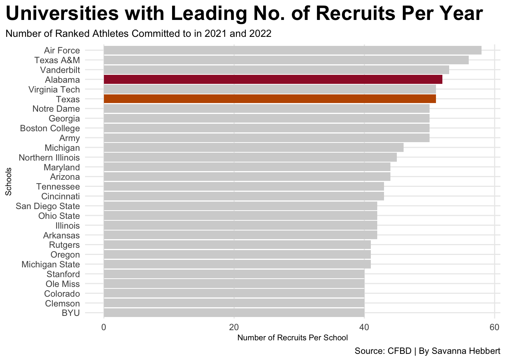
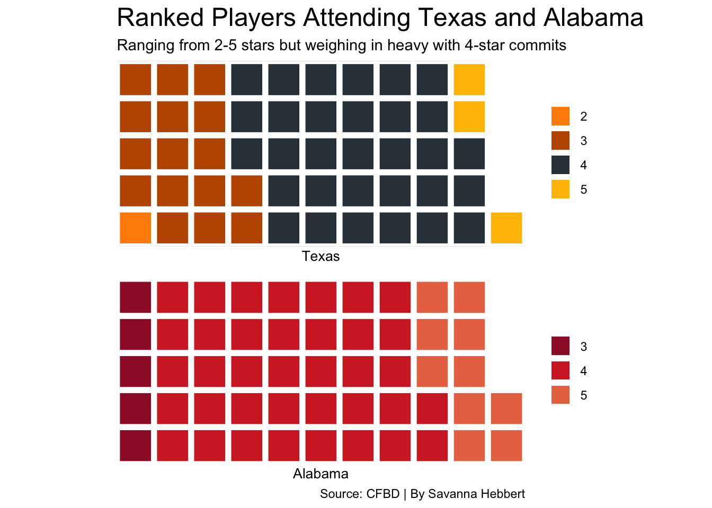

Top College Football Commits in the 2021 and 2022 Recruit Class
topcollege
texasalabama
topplayers
Author
Savanna Hebbert
Published
April 16, 2023
For the past couple of years, colleges have highlighted 5-star athletes on social media. With twitter becoming a huge recruiting platform for some, schools securing the top player in the state or position is a win in their book but also looks good to post on social media. Since 2021 and 2022, the Air Force Academy has gained about 55 to 60 high-ranked athletes.
On average schools have at least three 5-star commits per year, with a wider range of 3 or 4-stars. Focusing in on Texas and Alabama now. Alabama leads with 10 5-star players each year and Texas trails with three per year. Leading rank is 4-stars with Alabama securing 37 a season and Texas with 31. How does an SEC team compare to one in the BIG-12 with total recruits? Lets take a look.
The first thing you can see is Texas’ home state competitor Texas A&M is second in leading total recruits per year with ~55. Fourth overall is Alabama totaling out with ~53 a year, and a few steps behind is Texas with ~50.
Code
library(tidyverse)library(cfbfastR)library(ggbeeswarm)library(ggrepel)library(ggalt)library(waffle)recruits <-cfbd_recruiting_team(2022)recruits22 <-cfbd_recruiting_player(2022, recruit_type ="HighSchool") recruits21 <-cfbd_recruiting_player(2021, recruit_type ="HighSchool")recruits <-bind_rows(recruits22, recruits21) %>%mutate(nameyear =paste(name, year,committed_to))schools <- recruits %>%filter(is.na(committed_to) ==FALSE) %>%group_by(committed_to) %>%summarize(total_recruits =n()) %>%ungroup() %>%top_n(25, wt=total_recruits)tx <- schools %>%filter(committed_to =="Texas")al <- schools %>%filter(committed_to =="Alabama")ggplot() +geom_bar(data=schools, aes(x=reorder(committed_to, total_recruits), weight=total_recruits), fill="lightgrey") +geom_bar(data=tx, aes(x=reorder(committed_to, total_recruits), weight=total_recruits), fill="#BF5700") +geom_bar(data=al, aes(x=reorder(committed_to, total_recruits), weight=total_recruits), fill="#9E1B32") +coord_flip() +labs(x="Schools", y="Number of Recruits Per School", title="Universities with Leading No. of Recruits Per Year", subtitle="Number of Ranked Athletes Committed to in 2021 and 2022", caption="Source: CFBD | By Savanna Hebbert" ) +theme_minimal() +theme(plot.title =element_text(size =20, face ="bold"),axis.title =element_text(size =8), plot.subtitle =element_text(size=10), panel.grid.minor =element_blank(),plot.title.position ="plot" )

And, well, if it didn’t look like Alabama and Texas had a huge gap in the last graph, this one will change your mind. Lets view how many commits per ranking.
Code
texala <- recruits %>%filter(committed_to =='Texas'| committed_to =='Alabama')teamstars <- recruits %>%filter(is.na(committed_to) ==FALSE) %>%group_by(committed_to, stars) %>%tally() %>%ungroup()tx <-c( "2"=1,"3"=16,"4"=31,"5"=3)al <-c("3"=5,"4"=37,"5"=10)avg <-c("2"=3,"3"=17,"4"=9,"5"=3)iron(waffle(tx, rows =5, xlab="1 square = 1 recruit", colors =c("darkorange","#BF5700","#333F48","#FFBF00")) +labs(title="Ranked Players Attending Texas and Alabama", subtitle="Ranging from 2-5 stars but weighing in heavy with 4-star commits",x ="Texas"),waffle(al, rows =5, xlab="1 square = 1 recruit", colors =c("#9E1B32","#D22B2B","#E97451")) +labs(x ="Alabama",caption="Source: CFBD | By Savanna Hebbert") +theme(plot.title =element_text(size =12,face="bold"),axis.title =element_text(size =8),axis.title.y =element_blank() ))

Code
waffle( avg, rows =4, title="Average Star Ratings Per School", xlab="1 square = 1 Recurit", colors =c( "blue","#89CFF0","#0047AB","#088F8F") ) +labs(title="Average Number of Ranked Athletes Committed Per School", subtitle="In the 2021 and 2022 Recruit Classes",caption="Source: CFBD | By Savanna Hebbert", x ="Average Percentage") +theme(plot.title =element_text(size =16,face="bold"),axis.title =element_text(size =10),axis.title.y =element_blank() )
5-Star athletes look like they are hard to come by, as on average only 3 committed to a school in the ’21 and ’22 class.More often than not schools pick up 2-star players. But again, this is only showing the 2021 and 2022 recruit class, so maybe in the leading years 5-Star players will become more populated.
Does having 5-star athletes win you a championship? No, Alabama proved that. But for the Joe-blow that is scrolling across Twitter, those 5-star commit posts will be talked about. For instance, the top two in the ’21 and ’22 recruit class.
Although they are considered top two in their respective class neither of them committed to a top leading school. In the 2021 class, Korey Foreman committed to USC as a SDE (defensive end). He was rated 0.9994 and ranked 1st in his class.Travis Hunter CB (corner back) of the 2022 class committed to Jackson State. Hunter was rated 0.9999 and 1st in his class.
The green represents 1st rank, and the red shows the 5th ranked in each class. Given the status of the 5th ranked athletes for those classes, there is only a ~0.0005 difference in their ratings.
Code
top10 <- recruits %>%filter(name =="Korey Foreman"| name =="Travis Hunter"| name =="Domani Jackson"| name =="Tommy Brockermeyer") top21 <- top10 %>%select(name, rating,position) %>%filter(name =="Korey Foreman")top22 <- top10 %>%select(name, rating, position) %>%filter(name =="Travis Hunter")topclass <-bind_rows(top21, top22)onefive <- top10 %>%filter(name =="Domani Jackson"| name =="Tommy Brockermeyer")positions <-c("QB", "CB", "WR", "OT", "DL", "LB", "SDE")selectrecruits <- recruits %>%filter(position %in% positions)ggplot() +geom_beeswarm(data=selectrecruits, aes(x=position, y=rating), color="grey") +geom_beeswarm(data=topclass, aes(x=position, y=rating), color="green") +geom_beeswarm(data=onefive, aes(x=position, y=rating), color="red") +geom_text(data=topclass, aes(x=position, y=rating+.01, label=name)) +labs(x="Player", y=" Rating", title="Top Players in the 2021 and 2022 Recruit Class", subtitle="Green Representing the 1st Rank and the Red Represents the 5th ranked", caption="Source: CFBD | By Savanna Hebbert" ) +theme_minimal() +theme(plot.title =element_text(size =20, face ="bold"),axis.title =element_text(size =8), plot.subtitle =element_text(size=10), panel.grid.minor =element_blank(),plot.title.position ="plot" )